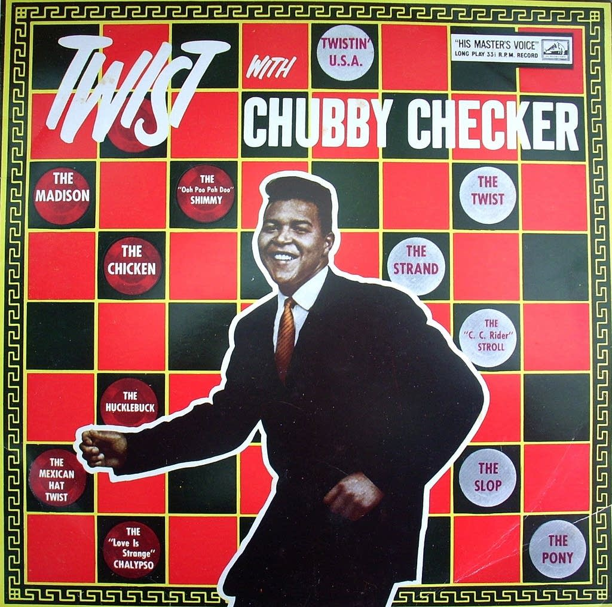
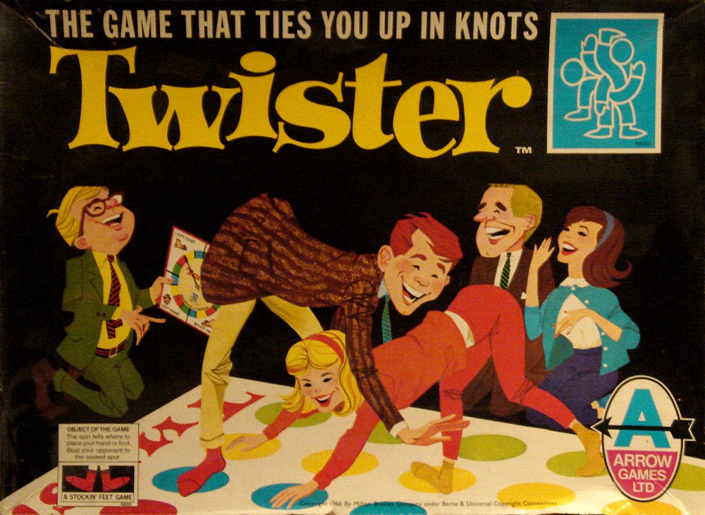

~ TTWYST ~
~
Talking Tech
With Your Startup Team
~
Seattle Startup Week 2016
Your host...
~
Sam Hamm, PhD
Lead Instructor
~
Who is this guy?
Deets
"Sam Hamm from Birmingham"
sam@codefellows.com
samhamm @ LinkedIn
samhamm.com
Backstory
First computer: Commodore VIC-20
Studied music technology in college (CSound, Max/MSP, SuperCollider)
Freelance web dev work in grad school
PhD in Music Composition (Univ. of Florida, 2005)
8 years as a music professor
Teaching at Code Fellows since July 2015
What is TTWYST about?
What is TTWYST about?
"Even though your product is tech, not everyone on your team has a tech background or speaks tech. Get in sync with both internal and external messaging to explain your what you’re building, how tech fits in and how your customers will use the product."
Chubby Checker?
"Come on baby, let's do The Twist..."
The Beatles?
"Shake it up baby, twist and shout..."
Twisted Sister?
"I wanna rock!"
Tornadoes?
"Things go wrong. You can't explain it, you can't predict it...you gotta move on. Stop living in the past, and look at what you got right in front of you."
Milton Bradley?
"Ties you up in knots!"
Laura Ingalls Wilder!
"My braids are totes to die for..."
All fun aside, let's get down to business...
~
Hmm... that sounds like the reality of building a team.~
Let's go back through those images again...
and consider how to achieve unity and success by how you talk tech with your startup team.
Messaging has multiple layers;
it is our duty to manage them.
it is our duty to manage them.
Messaging has multiple layers;
it is our duty to manage them.
"Even though your product is tech, not everyone on your team has a tech background or speaks tech. Get in sync with both internal and external messaging to explain your what you’re building, how tech fits in and how your customers will use the product."
Messaging has multiple layers; manage them.
Demystify and clarify the vocabularies used by different teams in your organization... for instance:
- Devs
- Marketing/Sales
- Administration/Operations
The way that one team educates another is critical, because that language, and even more importantly, the concepts behind it, get carried forward.
Perspective matters;
we come from different places.
we come from different places.
Perspective matters;
we come from different places.
"Even though your product is tech, not everyone on your team has a tech background or speaks tech. Get in sync with both internal and external messaging to explain your what you’re building, how tech fits in and how your customers will use the product."
Perspective matters;
we come from different places.
We work with this a lot at Code Fellows. For instance:
- Internal & External
- Admissions + Education + Marketing
- Instructor & Student
Our complicated inter-relationsips are not unique. Every organization faces these challenges of translation.
Leaders are faces of the organization;
everyone is part of the presentation.
everyone is part of the presentation.
Leaders are faces of the organization;
everyone is part of the presentation.
"Even though your product is tech, not everyone on your team has a tech background or speaks tech. Get in sync with both internal and external messaging to explain your what you’re building, how tech fits in and how your customers will use the product."
Leaders are out front, but everyone messages.
Multiple ways this happens:
- Internal team interactions with external agents.
- Professional and social organizations/events.
- Random everyday interactions as human beings.
It all fits together, and it is obvious when it does not. Do not expect that you are only sending messages in the ways that you planned. Transmission is always happening.
Don't fear the challenges;
chase them and respect them.
Don't fear the challenges;
chase them and respect them.
"Even though your product is tech, not everyone on your team has a tech background or speaks tech. Get in sync with both internal and external messaging to explain your what you’re building, how tech fits in and how your customers will use the product."
Chase the challenges.
Actively identify and confront potential areas for refinement:
- Be deliberate in teaching one another.
- Do not let insitutional wisdom escape.
- Do not expect shortcomings to resolve themselves.
Be active and prioritize methods of education, translation, and transmission. Circle of life: an exit interview feeds into the next onboarding and adds to the organizational lexicon.
Find joy in repetition;
you play like you practice.
you play like you practice.
Find joy in repetition;
you play like you practice.
"Even though your product is tech, not everyone on your team has a tech background or speaks tech. Get in sync with both internal and external messaging to explain your what you’re building, how tech fits in and how your customers will use the product."
Joy in repetition & practice to play
The power of iteration!
- It is not a waste of time... if it is fun!
- If your individuals are growing (as they should be), there are always new things to share and learn.
- Seek ongoing refinement with incentives.
Getting something right once is not a display of command; it could just be luck. Establish an internal Department of Reduncancy Department to manage repetition.
We're stronger when braided;
weave your messaging throughout.
weave your messaging throughout.
We're stronger when braided; weave your messaging.
"Even though your product is tech, not everyone on your team has a tech background or speaks tech. Get in sync with both internal and external messaging to explain your what you’re building, how tech fits in and how your customers will use the product."
Braids provide strength; weave messages throughout.
- Everyone knows what everyone is doing.
- Empathy is the enemy of animosity/frustration.
- There is strength in parallel purpose.
Learning to do this effectively takes time and effort and... most of all, attention. Grooming is a sign of respect, appreciation, and unity. Groom your individuals into teams that groom one another.
RECAP
Layers of messaging; it's our duty to manage them.
Strive to consider all persepectives.
Leaders are faces of the organization; everyone is part of the presentation.
Don't fear the challenges; chase them and respect them.
Find joy in repetition; you play like you practice.
We're stronger together: braided = branded.
Don't be this guy!
Q&A
~ TTWYST ~
Credits and Thanks...
~
Slide deck created with Reveal.js
~
I want to thank:
The one-and-only amazing and incredible DAVE PARKER!
:-) to BRANDY RHODES for organizing!